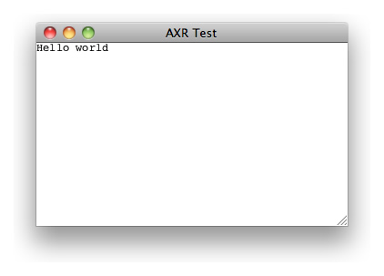
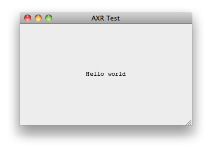
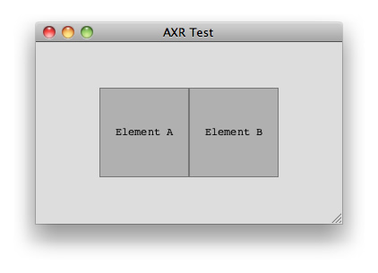
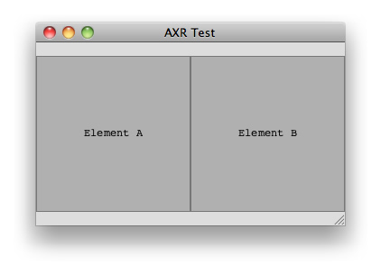
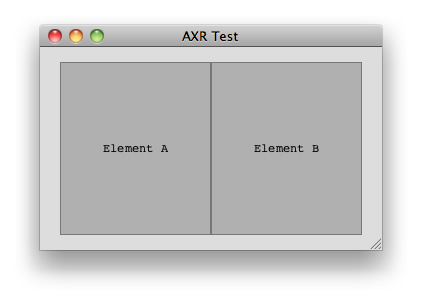
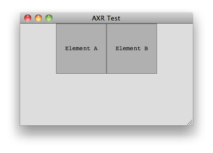

1 Introduction
HSS is the design language that powers the presentational side of a document written for the AXR platform. It's syntax is inspired in CSS, but it takes the concept to a whole new level, providing many new features that enable newfound flexibility and power.
It was invented by Miro Keller in 2009 and has been evolving since then. The idea started as a small superset of CSS, but it became clear to the author that a fresh start would be required because the burden of legacy compatibility was too high to create a really great language. Thus, the AXR Project was started.
2 Set-up of the environment
At the time of writing this tutorial, the prototype rendering engine is capable of handling all the concepts we are going to explore, but it is not available as a browser plug-in, yet. Thus, you need to download the prototype for your specific platform from the project page, and open XML files located on your local computer.
//FIXME: add instructions on how to install the prototype
Next, you should create a folder somewhere you can remember, and create the text files that we are going to discuss in these tutorials. The best way is to manually type the things in yourself, instead of copying and pasting, because that way you'll learn much more and you'll be much less prone to overlooking details of the syntax.
For the sake of simplicity, I'll just use paths that start with a slash as if the files were located in the root of your hard-drive. Please prepend them with what's missing. Say, for example that I put my files in a new folder on the desktop, called tutorials. Whenever I see /index.xml in the tutorial, the actual path to that file would be /Users/myuser/Desktop/tutorials/index.xml, since I am on a Unix-like system.
Configure your text editor to use the UTF-8 encoding, either at the time of the file creation or in a setting in your application's settings. This encoding is the official recommended one to use.
3 Hello world
The first thing we'll do, to follow the tradition of all programming languages, is creating the most basic file possible, which gives a basic output.
3.1 Let's rock!
Open your favorite text editor, and create a new file /hello_world.xml. Inside it, write this:
<?xml version="1.0" encoding="UTF-8" ?> <hello>Hello world</hello>
Done! Now, open it in the prototype, and you'll see something like this:

Let's go over each line:
<?xml version="1.0" encoding="UTF-8" ?>
This is an XML instruction that needs to be present in all XML files, as per the specification (//FIXME: add link). We declare the file to use the 1.0 version of the XML standard, and that our file is encoded in the UTF-8 encoding, which is what you should always use.
<hello>Hello world</hello>
The only requirement for the XML file that the AXR platform imposes is that the XML document is well-formed (//FIXME: add link), and that means, among other things, that there must be one, and only one, root element that contains all the other elements. In this case our root element is called hello, and it contains just some content text, "Hello world".
3.2 Style sheets
Now, let's style it up a bit. For that, we need to add a line to the XML file that will determine how to find the stylesheet that will contain the instructions on how to represent the content of the XML file:
<?xml version="1.0" encoding="UTF-8"?> <?xml-stylesheet src="style.hss" type="application/x-hss" version="1.0"?> <example>Hello world</example>
Here's what we added:
<?xml-stylesheet src="style.hss" type="application/x-hss" version="1.0"?>
This line is a so called XML instruction, and the instruction name is xml-stylesheet. It's arguments, src, type and version can come in any order.
srcis the location of the HSS file relatively to the XML file. No absolute paths or URLs are supported yet in the prototype.typeis the MIME type of the stylesheet. In this case, we are usingapplication/x-hss, because it is not an official standard yet, and MIME rules state that you have to use thex-prefix for non-standard types. In the future, this may end up beingapplication/hssor eventext/hss.Last, but not least, it is always required that you declare the
versionof the AXR platform that you are targeting. In case that the syntax changes in the future, backwards compatibility modules will be able to render old documents correctly, becaue they will know what you meant in the first place. So, for now, we will always be using1.0, at least until the first official version has been completed and released.
Now, with your favorite text editor, create a new file /style.hss, and type this:
example
{
background: #ED;
textAlign: center;
contentAlignY: middle;
}
Go back to the prototype, hit refresh (cmd+R on the Mac, ctrl+R or F5 on Windows and Linux), and you should get something like this:

Let's go over each part:
example
{
//more stuff here
}
This is what's called a rule. It begins with a selector, which points to an element in the XML source tree, which will receive whatever is defined inside of the block (which starts with { and ends with }).
background: #ED;
This is a property definition. First comes the property name, then immediately after it comes a colon, then optional whitespace, then one or more values, then more optional whitespace, and finally an end of statement (aka semicolon), which is optional when the property definition is the last thing in the rule.
In this particular line, we are setting the background of the example element to a light gray (in case, you haven't guessed it, #ED represents a color).
textAlign: center;
Here we are setting the content text to be center aligned, as you'd do in any text processor.
contentAlignY: middle;
And finally, here comes a small taste of the magic of HSS. How many times have you wanted to do this with CSS? You set the content of the example element to be vertically aligned to the middle, which is equivalent to 50%. We'll get to it later in more detail, but for now, know that the root element will always be as wide and tall as the window.
3.3 Final touch
To wrap up this segment, let's change the font of the text. We are going to use what's called an object definition, which will be explained more in depth in further chapters. For now, just copy along. Add the following lines to the block:
font: @{
face: "Impact";
size: 40;
color: #C;
};
The entire file /style.hss now looks like this:
example
{
background: #ED;
textAlign: center;
contentAlignY: middle;
font: @{
face: "Impact";
size: 40;
color: #C;
};
}
If you reload in the prototype, you should get something like this:

You can recognize a HSS object by the @, which is called the object sign. Its block contains property definitions, like normal rules do. In this concrete example, the properties face, size and color are the ones we use because we are defining a @font object, which is the default object type for the font property.
If you didn't fully understand what's going on, don't worry. It will become much clearer as we dive into the full syntax of objects and how to use them.
4 The basics
4.1 Selectors
Selectors point to the elements in your XML file, to tell the rendering engine which properties to apply to which object. Create a new text file /basics.xml and type the following:
<?xml version="1.0" encoding="UTF-8"?> <?xml-stylesheet src="basics.hss" type="application/x-hss" version="1.0"?> <example> <sibling>Element A</sibling> <sibling>Element B</sibling> </example>
This basic XML file contains a root element called example, which contains two children elements, called sibling, which in turn contain "Element A" and "Element B" as content text.
Create the HSS file: /basics.hss, containing the following:
* {
background: #D;
}
If you went trough the last tutorial you can probably guess that this is a rule, and that what's inside the block applies a gray background. The difference is that instead of targeting the root element with its name, we are using the universal selector, the star *. Open the /basics.xml file with the prototype and you should see something like the following:

4.2 Scope and nesting
If you are familiar with CSS, you may think that this applies to all elements in the XML source. There is a crucial difference in HSS, and that is the notion of scope. In the example, only the root element will be selected, because we always start at root scope. To select elements further down the document tree, you need to use nesting or combinators (these will be explored later). The scope restricts what will be selected, and which elements are said to be in scope depends on where in your HSS file you use a given selector.
In HSS you can put rules inside other rules, this is what's called nesting. Change your /basics.hss file to look like this:
* {
background: #D;
sibling
{
width: 100;
height: 100;
alignY: middle;
contentAlignY: middle;
textAlign: center;
background: #0003;
border: @{
size: 1;
color: #7;
};
}
}
Reload the file and you should see something like this:

Here's what we added:
sibling
{
width: 100;
height: 100;
alignY: middle;
contentAlignY: middle;
textAlign: center;
background: #0003;
border: @{
size: 1;
color: #7;
};
}
We are selecting all the sibling elements inside the previously selected element, and adding some properties to be able to see them better. Only the two children of the example element are in scope, because we are inside the rule that selects the example element.
4.3 Dissection
Let's go over the property definitions and see what they do:
width: 100; height: 100;
Here we are setting the basic dimensions of the elements to 100 points. These are resolution independent units of measure, which when the scale factor is 1 are equal to 1 screen pixel. The width and height properties accept numbers, percentage numbers or the keyword content (plus some advanced things we won't consider right now). Anywhere numbers are accepted you can also write expressions, using common mathematical operands, such as +, -, * and /. Parentheses are also allowed, and they are very useful to group expressions.
The default value for width is the percentage number 100% and for height it is the keyword content, therefore making them as wide as the parent and as tall as their content when left to their default values.
Let's experiment a bit: Change the width to 50%. Now your document should look like this:

Now we want to make them as tall as the window, so we set the height to 100%.

Maybe not completely as tall as the window. Make it 100% - 30. If you resize the window you'll see that the empty space at the top and bottom will always be 15 points each.

Just to brag, now, we're going to take it a bit to extreme! Make the width (100% - (10% + 5))/2:

OK, this is probably overdoing it :) But this is just to show that you can use more complicated expressions without problems.
Let's go back to width: 100; height: 100; and then look at the next line:
alignY: middle;
Here we are setting the alignment point in the vertical axis to the keyword middle, which will be automatically converted to 50%. The default value for the horizontal axis is already 50%, that's why we didn't need to use alignX or contentAlignX on its parent to have it aligned in the middle horizontally.
If we change this to top or 0, you'll see it sticks to the top:

If we set it to bottom or 100%, it will got to the bottom:

Intermediate values are possible, as well. But before we do that, we first need to understand the concept of anchor point. Each object in our document has a point wich will be the reference used when positioning it on the alignment point. By default, anchorX and anchorY are 50% of their width and height, respectively.